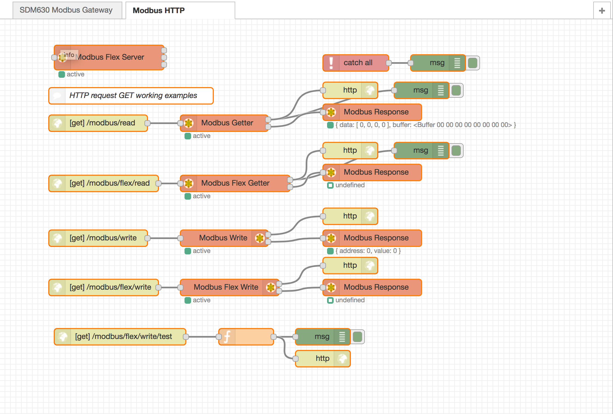

node-red-contrib-modbus
The all-in-one Modbus TCP and Serial contribution package for Node-RED
Public LTS line: v5.x (current: 5.60.2) · License BSD-3-Clause · Repo: GitHub
If you like this package, please give us a star on GitHub.
AI-assisted maintenance: This project is actively developed and supported with Claude Code Pro (Anthropic). Issue triage, specs, tests, and patches on the v5 LTS line are routinely done with Claude Code as part of the maintainer workflow — alongside human review before release.
Requirements
| Minimum | |
|---|---|
| Node.js | >= 22 (package.json engines) |
| Node-RED | >= 4 (node-red.version) |
| Install | Palette Manager or npm install node-red-contrib-modbus |
Older Node.js / Node-RED combinations: see historical notes in HISTORY.md. Prefer staying on current LTS Node.js with this release line.
What’s in the package (v5)
TCP / serial Modbus client nodes plus an in-package buffer Modbus TCP server for demos and tests.
| Palette node | Role |
|---|---|
| Modbus-Client | Config: TCP or Serial, queue, reconnect (XState FSM) |
| Modbus-Read | Periodic FC1–4 poll |
| Modbus-Getter | On-demand FC1–4 read |
| Modbus-Flex-Getter | Payload-driven FC1–4 read |
| Modbus-Write | FC5 / 6 / 15 / 16 write |
| Modbus-Flex-Write | Payload-driven write |
| Modbus-Flex-Sequencer | Ordered multi-range reads |
| Modbus-Flex-FC | Custom FC maps (extras/argumentMaps) |
| Modbus-Flex-Connector | Runtime reconnect / endpoint switch |
| Modbus-Queue-Info | Client queue depth / reset |
| Modbus-Response | Status display for responses |
| Modbus-IO-Config | Named IO JSON mapping |
| Modbus-Response-Filter | Filter IO payload by name |
| Modbus-Server | Buffer-backed TCP slave (jsmodbus) |
Not in v5: TLS client (Modbus-Client-TLS is v6), flow-based dynamic request/response gateway (#567 → separate package recommendation), modbus-flex-server (own package — see below).
Highlights since 5.46 / in 5.50.0
- Client FSM / reconnect / queue hardening (from 5.46.x)
- Safer unit ID handling (
unitId/unitid, including unit0) - Modbus address/quantity validation improvements
- Numbered learning examples
01…18+ Learning Path docs - Requires Node-RED
>= 4and Node.js>= 22
See CHANGELOG.md for the full list.
How to use / Learning Path
Recommended: use the in-package numbered learning examples (01 … 15).
- Install this package and restart Node-RED.
- Open Menu → Import → Examples →
node-red-contrib-modbus. - Work through the flows in order (or jump to a single node tutorial).
| Doc | Content |
|---|---|
| Learning Path guide | Stages, Modbus cheat sheet, node ↔ example map |
| Examples index | Full file list, TCP ports, IO path, old→new mapping |
| Docs hub | All documentation entry points |
Each example tab has an English comment node with run instructions. Node sidebar help points at the matching example filename.
| Learn… | Import example |
|---|---|
| Modbus registers & FCs | 01-Modbus-Basics-Registers-And-FCs |
| First TCP client + server | 02-Getting-Started-Client-And-Server |
| Polling / on-demand / flex read-write | 03 … 06 |
| Sequencer, Flex-FC, Connector, Queue, IO | 07 … 11 |
| Buffer server & patterns (HTTP, serial, gateway) | 12 … 15 |
Also: Wiki / DEBUG · YouTube Playlist · Leanpub Modbus book · optional older flow on flows.nodered.org

Install
In your Node-RED user directory (typically ~/.node-red):
npm install node-red-contrib-modbus
Global (less common):
npm install -g node-red-contrib-modbus
If native modules fail to build:
npm install node-red-contrib-modbus --unsafe-perm --build-from-source
List published versions:
npm show node-red-contrib-modbus versions
Install a specific version (example):
npm install node-red-contrib-modbus@5.45.2
Runtime libraries
| Package | Role in this contrib |
|---|---|
@openp4nr/modbus-serial |
Modbus client I/O (TCP / serial / ASCII, etc.) |
jsmodbus |
In-package Modbus-Server (buffer slave) |
@xstate/fsm |
Client connection state machine |
serialport / @serialport/list |
Optional — list serial ports in the UI (not the runtime Modbus stack) |
If TCP fails, verify connectivity with a plain Modbus client first. If serial fails, verify the port with serialport first.
Logging uses the debug package (not winston — winston is a v6 direction):
DEBUG=contribModbus*,modbus-serial node-red -v
More options: Wiki DEBUG.
Modbus Flex Server (separate package)
Modbus-Flex-Server was moved out of this package (vm2 / maintenance boundary). Install the dedicated contrib if you still need it. Further package splits (client vs server) remain a longer-term v6 architecture topic; v5 keeps Modbus-Server in this package as the buffer slave for demos and tests.
P4NR B2B Community
The P4NR B2B Community (driven by Iniationware) supports development and commercial help around Modbus for Node-RED. Bianco Royal partners with P4NR.
Leanpub live book
The Online Leanpub Book (Edition 2 for 5.60+, Node-RED 5 / Node.js 24) covers v5.x nodes and options in depth (“buy once, update forever”). For a free start in this repo, use the Learning Path (examples 01–18).
Errors & status
From v5.22 onward, client and server nodes catch many network and protocol errors so Node-RED should not crash for those handled cases. Always watch node status, Catch nodes, and optional empty-msg-on-fail settings in your flows.
Contributing
Contributors welcome. Fork the repo and open PRs against develop (or discuss via issues). For larger features, see the maintainer pipeline under docs/p4nr/.
Useful scripts (see package.json):
npm run build # lint + gulp → modbus/
npm test # Mocha (parallel)
npm run test:units
npm run coverage
npm run dev-link # local link into Node-RED
Authors
Since April 2016 by Klaus Landsdorf and the community.
- Contribution since 2016: Contributors
- License change 2016: Jason D. Harper
- Started early 2015: Mika Karaila
Contributors
Code Contributors
This project exists thanks to all the people who contribute. [Contribute].

Financial Contributors
Become a financial contributor and help us sustain our community. [Contribute]
Individuals

Organizations
Support this project with your organization. Your logo will show up here with a link to your website. [Contribute]